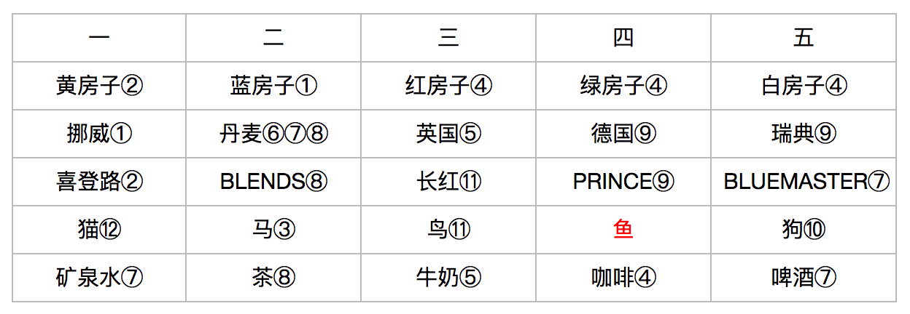

一、爱因斯坦房子算法
有5个人具有5种不同颜色的房间；每个房间住着不同国籍的一个人；每个人都在喝一种特定品牌的饮料；抽一特定品牌的香烟；养某一特定的宠物；没有任意两个人抽相同品牌的烟或喝相同品牌的饮料，或养相同宠物。问：“谁在养鱼？”
1.英国人住红房子
2.瑞典人养狗
3.丹麦人喝茶
4.绿房子紧邻白房子，在白房子左侧
5.绿房子主人喝咖啡
6.抽“长红”牌香烟的人养鸟
7.黄房子主人抽“登喜路”牌香烟
8.正中央房子的主人喝牛奶
9.挪威人住第一个房子（最左侧）
10.抽BLENDS牌香烟的人和养猫的人相邻
11.养马的人和抽“登喜路”牌香烟的人相邻
12.抽BLUEMASTER牌香烟的人喝啤酒
13.德国人抽PRINCE牌香烟
14.挪威人和蓝房子主人相邻
15.抽BLENDS牌香烟的人与喝矿泉水的人相邻
解题：
①挪威人住第一个房子，蓝房子第二个：条件9，条件14
②挪威人住黄房子，抽“登喜路”：条件1挪威人不住红，条件4绿房子在白房子左侧，条件14挪威人和蓝房子主要相邻，条件7
③蓝房子的养马：条件11
④红在中间，4绿，5白：条件5绿的喝咖啡，条件8中间的喝牛奶，条件4绿在白左侧但绿不喝牛奶只能红的在中间
⑤英国人在中间，喝牛奶：条件1，条件8
⑥条件12喝啤酒的只剩2号蓝房子和5号白房子：1号抽“登喜路”，3号喝牛奶，4号喝咖啡
⑦1号房子喝矿泉水，2号房子是丹麦，5号房子抽BLUEMASTER喝啤酒：如果5是丹麦，则条件15矿泉水不满足，因为4喝咖啡
⑧2号蓝房子丹麦抽BLENDS，喝茶：条件13德国人抽PRINCE，条件15抽BLENDS的与喝水的相邻，条件3喝茶
⑨4号绿房子是德国抽PRINCE，5号白房子是瑞典：根据条件13，3和4号房子不知道是什么烟，但3号是英国人，5号抽BLUEMASTER
⑩瑞典人养狗：条件2
⑪英国人抽“长红”养鸟：瑞典狗，丹麦马，德国抽PRINCE，挪威人抽“登喜路”
⑫挪威人养猫：条件10
德国人养鱼
解题对应表格：

二、回文算法
①选择任一数值；
②翻转此数值（例如，选择13则翻转为31），并将原数值和翻转数值相加（13+31）；
③相加结果若不是回文，则返回②反复执行，若是回文则终止算法
举例：
13+31=44，44是回文，退出
19+91=110，110+011=121，121是回文，退出
三、欧几里得算法（最大公约数）
给出两个任意自然数m和n，为便于说明，假设m总是大于等于n。即使如此假设也不会推动算法的通用性，因为必要时可以将m和n对调。此时，求m和n的最大公约数
①m除以n，余数为r
②若r为0，则n是最大公约数。若r非0，则将m设为n，将n设为r，并返回①继续运算
普通算法：
尾递归算法：
动态规划：为了提高算法效率，在算法执行过程中会将计算过的结果保存到类似于列表的存储单元，需要时再取出
“散列”（Hash）应该表示将给定材料 （即输入数据）仔细“剁碎”后，使其方便“食用”（即变为散列值）的过程
散列表的特点是，只要给定键值，那么搜索已保存的数据时，只需耗费常数（很短）的搜索时间
包括C语言在内的很多计算机语言中，调用一个函数时，调用地址会保存到系统的内部栈。因为调用函数后，需要知道应当返回的位置。因此，函数的递归调用次数增多时，会导致算法执行速度变慢
递归算法比较简洁明了，但运算速度（相对）较慢；而直接利用for或while循环虽然 运算速度快，但查读（相对）麻烦
尾递归：函数返回后并没有剩余运算，被调用的函数不需要返回原调用点，因为“被调用”的函数返回时，“调用”函数的函数本身也会返回（直接return，没有其他后续计算操作）
真正有实力的程序员编写算法后还会不断思考，会不会发生内存泄漏、是否达到防御性编程的要求、执行速度是否达到最优等。不仅如此，他们还会考虑代码是否已经整理为别人容易查阅的形式、注释是否充分等。只有经过深思熟虑的后产出的程序，才有资格 评为A+
多线程同时运行的分布式环境中发生的BUG特征在于，它并不总是露出身影，而是在特定情况下短暂出现，之后又会无影无踪
只靠阅读理解别人的代码并非易事，而实际编程中，需要做的工作有一半以上是阅读并理解别人编写的代码。因此，宁可自己编写新代码也不愿阅读别人代码的人，很难成为优秀的程序员